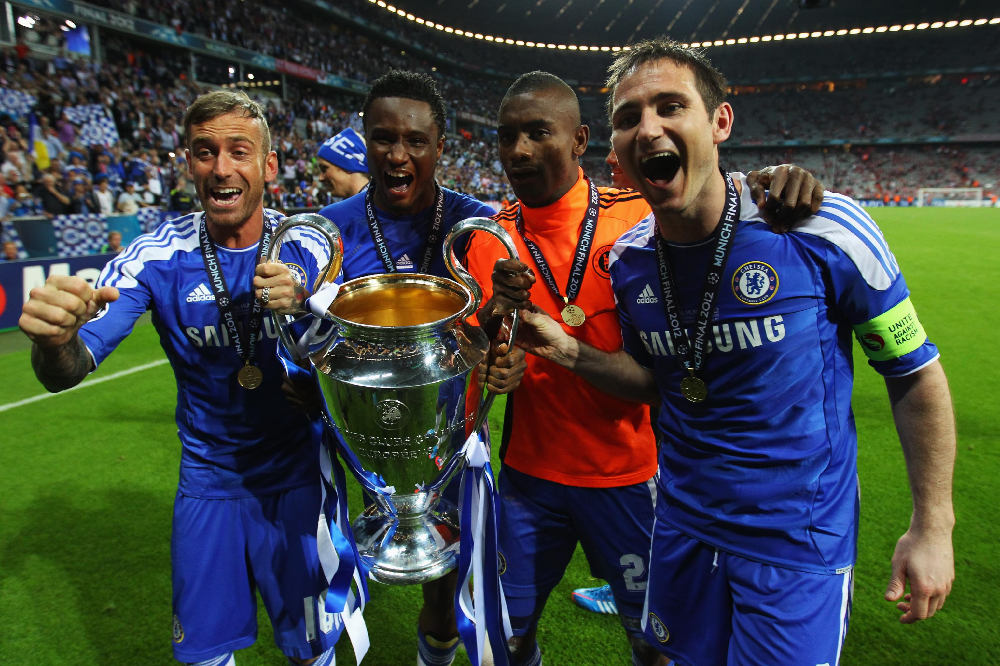

Chelsea go down with 10 mins remaining, Drogba scores. Bayern get a pen in extra time, Cech saves. Bayern are ahead in the shootout, Cech saves x2. I remember when Drogba got the equaliser I just shouted his name as hard as I could for a long, long time. I was at uni in the States at the time and the water polo team had watched the semis and the final with me and my United supporting mate. A lot of football fans were made that day. Mostly Chelsea.
Probably the most important game in Bayern's recent history. This started an attitude and a movement in the team where you do not stop until it's over. We also got in Mandzukic who was an massive upgrade from Gomez in my opinion - a real big game player and did everything he could for the team - and got in Martinez as well. Next season was just pure dominance.
 Home